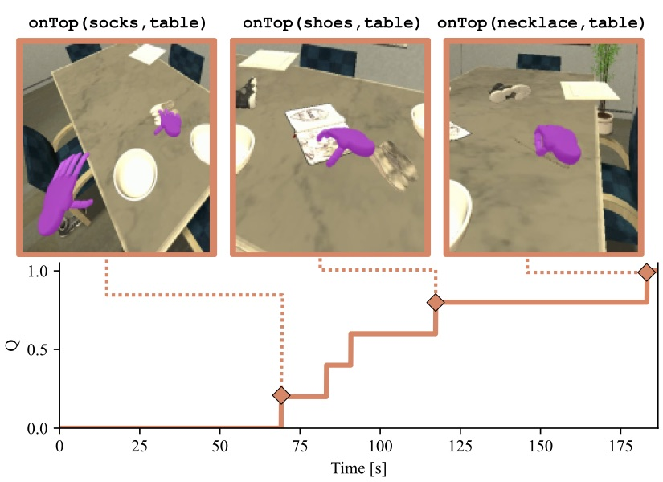
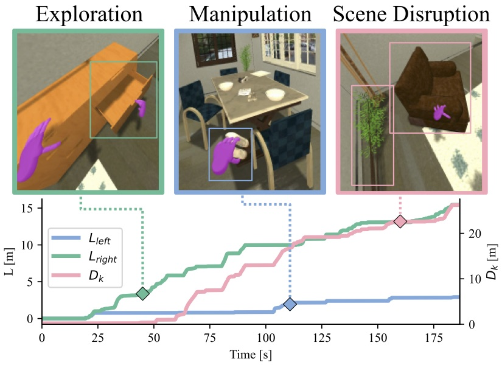

Metrics
We used a combination of metrics to measure the performance of the agent, a primary metric based on the degree of completion of the activity, and a set of secondary metrics that evaluate different aspects of the efficiency of the solution.
Primary Metric: Degree of Success
The primary metric for BEHAVIOR is the (maximum) fraction of satisfied logical predicates of the activity’s goal definition (Q). In the case that a goal is multi-part (e.g., “put one apple on a table or put two pears on a table”), Q is automatically calculated by choosing the combination of goal conditions that maximize Q.

Secondary Metrics: Efficiency
The secondary metrics capture how efficiently an agent performs the activity relative to the best human demonstration.
Simulated time (Tsim): The total simulated (not wall-clock) time, how quickly the agent solves the activity.
Kinematic disarrangement (DK): Displacement caused by the agent in the environment. This can be accumulated over time, or differential i.e. computed between two timesteps, e.g. initial, final.
Logical disarrangement, DL: Amount of changes caused by the agent in the logical state of the environment. This can be accumulated over time or differential between two time steps. This captures kinematic state changes (putting an item on top of another item, taking an item out of a cupboard) as well as non-kinematic state changes like toggling a stove on, making an item wet, freezing an item. All kinematic state changes are grouped as 1 unit of logical disarrangement per item.
Distance navigated
Lbody: Accumulated distance traveled by the agent’s base body. This metric evaluates the efficiency of the agent in navigating the environment.
Displacement of hands, Lleft and Lright: Accumulated displacement of each of the agent’s hands while in contact with another object for manipulation (i.e., grasping, pushing, etc). This metric evaluates the efficiency of the agent in its interaction with the environment.

If you want to compute the metrics on your own, it is recommended that you follow the example in igibson/examples/behavior/behavior_env_metrics.py.
This example shows how to leverage the start/step/end callbacks and aggregator to collect metrics on a behavior run.
Secondary metrics can be computed in three different modes:
per
timestep– this provides the raw value of a metric for a given timestepintegratedover time – this is the sum of the absolute value of the metric over timerelativechange between two timesteps – this is the difference of the per timestep metric between the start and the current timestep
The following is a description of the report of metrics returned at the end of an episode.
For additional information, see the corresponding implementation under iGibson/metrics.
q_score– Primary metric: Degree of Successtimestepintegrated
kinematic_disarrangement– see abovetimestepintegratedrelative
logical_disarrangment– see aboverelativetotal_objectstotal_states
agent_distance– distance traveled by torso of the behavior_robottimestepintegrated
grasp_distance– distance traveled by manipulators of behavior_robot while graspingleft_hand/right_hand/bodytimestepintegrated
work– F*d per frame performed by all body partsleft_hand/right_hand/bodytimestepintegrated
pos– 3D position of agent partsleft_hand/right_hand/bodytimestepintegrated
local_pos– 3D position of agent parts in frame of reference of bodyleft_hand/right_handtimestepintegrated
grasping– Whether hand is grasping (or touching) objectleft_hand/right_handtimestepintegrated
reset– Demos allow a user to reset the bullet position of a robot part to the VR controller position to avoid getting “stuck” on objectsleft_hand/right_hand/bodytimestepintegrated
satisfied_predicates– the top-level satisfied goal indices in the activity goal conditiontimestepintegrated
time– simulator time in both simulation steps and simulated timesimulator_stepssimulator_time
Note that computing some of these metrics will strongly affect your runtime performance as they query simulator state, so it is recommended to only compute them in your evaluation, not during traning.